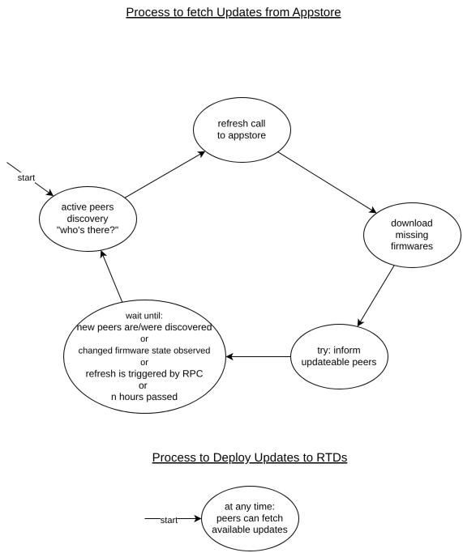

4. Real Time Device Lifecycle
4.1. Firmware Updates 1.0 (Legacy)
Note
The legacy update process will be phased out starting in Q2/2025. The new process will allow controlling the firmware updates from the Appstore, making the process more secure and transparent.
The Devices built by ML!PA typically run on Riot-OS. As administrators typically don’t have direct access to a Real Time Device (e.g. a sensor board), firmware updates use the Edge Device as an intermediary. Firmware is deployed to the Edge Device via the appstore and then offered to the Real Time Devices. Successful installations are reported back to the appstore.
Multiple firmware files for multiple Real Time Devices of multiple versions can be deployed as a single snap package. The package contains metadata, specifying which firmware file is intended for which class of Real Time Devices or which individual Real Time Devices.
The packaging and deployment is a highly automated process – which will be described in detail in the following chapter, not because a user needs to know the details, but because it’s valuable knowledge to understand how the system works.
We’ll also explain, how to package firmware as a snap package and how to validate, if the firmware was properly deployed.
Prerequisites
Linux (Debian/Ubuntu based)
firmware files to be deployed
m2cp developer tools for Linux must be installed
Firmware Files
Our firmware is build based on SUIT (Software Updates for Internet of Things). The process for generating the firmware files is out of the scope of this document. We’ll assume to have a set of valid firmware files.
Example:
hwr-0_fwt-22_fwr-202402300_fws-0.bin
hwr-0_fwt-22_fwr-202402300_fws-1.bin
hwr-0_fwt-22_fwr-202402300.mani
hwr-0_fwt-22_fwr-202402301_fws-0.bin
hwr-0_fwt-22_fwr-202402301_fws-1.bin
hwr-0_fwt-22_fwr-202402301.mani
hwr-0_fwt-22_fwr-202402302_fws-0.bin
hwr-0_fwt-22_fwr-202402302_fws-1.bin
hwr-0_fwt-22_fwr-202402302.mani
Each firmware consists of three files:
a
.manifile containing the manifesta
_fws-0.binand a_fws-1.binfile containing the firmware payload for slots 0 and 1 of the Real Time Device
The filenames encode, which class of Real Time Devices the firmware is intended for:
hwr-<HARDWARE_REVISION>_fwt-<FIRMWARE_TYPE>_fwr-<FIRMWARE_VERSION>_fws-0.bin
hwr-<HARDWARE_REVISION>_fwt-<FIRMWARE_TYPE>_fwr-<FIRMWARE_VERSION>_fws-1.bin
hwr-<HARDWARE_REVISION>_fwt-<FIRMWARE_TYPE>_fwr-<FIRMWARE_VERSION>.mani
It’s crucial, that the filenames are correct, as they are parsed by the packaging tool.
Packaging Tool
To package the firmware files, we use the m2cp-coap-manager tool, which is contained in the developers tools for
Linux. This CLI tool scans a given path for firmware files and packages them into a snap package
with a custom name and version number.
The package will contain the firmware files, additional metadata derived from the firmware file names, and a deployment tool, which will push the firmware – not directly to the Real Time Device! – but to the m2cp-coap server on the Edge Device. This server maintains an archive of all available firmware files and offers them to the Real Time Devices via a CoAP endpoint.
Let’s assume that our firmware files are in the directory ./firmware and we want to package them into a snap package
called “my-firmware” with version “1.0.0”, to be exported to directory ./snap:
m2cp-coap-manager firmware-snap -i ./firmware -o ./snap -n "my-firmware" -v "1.0.0"
The tool will create the file ./snap/my-firmware_1.0.0_arm64.snap, which can be deployed to the appstore.
Please read the output of m2cp-coap-manager carefully to verify, that it found and processed your firmware files correctly.
The output should list all files that were added to the resulting snap.
To verify the contents of the produced snap file, you can use the Linux tool unsquashfs to extract and view the contents.
$ unsquashfs <snap-filename>
If you don’t have unsquashfs installed, use:
sudo apt-get update && sudo apt-get install squashfs-tools
Deployment
As usual, the App must now be assigned to a Deployment Group of Devices to be deployed. It will then be installed on all the Devices of the Deployment Group. Once installed, the App will – after each boot - contact the m2cp-coap server on the Edge Device and offer the firmware files contained in the package. It sends a list of its available files together with their hash sums and waits for the CoAP server to request files that are not yet known to the server. Those files are transferred from the App to the server. The App then shuts down until the next boot – while the server notifies Real Time Devices of the new firmware files. The Real Time Devices can then request the firmware files from the server.
To learn more about deployment using the App Store Service, please refer to managing devices](Management_Device.md).
Validation
Validation of the firmware deployment is currently (as of 2024-05-30) still a manual process without a comfortable UI.
In the future, we plan to visualize the currently installed firmware versions of all Real Time Devices in the appstore.
Until then, there’s multiple manual ways to check, which firmware is currently installed on a Real Time Device. You should choose the method which is most convenient for you.
Use the
/whoami/1endpoint of the Real Time Device to get the firmware version. This requires you to have direct access to the internal network of the Edge Device and its Real Time Devices.Review the SIGNAL messages emitted by m2cp-coap. After successfully installing a firmware, the app will emit a SIGNAL message with the firmware version. This can be seen in the appstore logs.
Review the logs of the m2cp-coap server. The server logs all requests and responses. You can see, which firmware files were requested by which Real Time Device.
Review the DATA messages with Device information emitted by each Real Time Device at boot.
4.2. Firmware Updates 2.0 (current)
Real Time Devices (RTD) can’t communicate directly with the App Store Service - instead they use an Edge Device (ED) as a proxy. On the Edge Device the App m2cp-coap is responsible for handling those updating process.
The App Store Service has a generalized concept of “Apps” that is applied to all classes of Devices. It considers the firmware of a Real Time Device to be the App running on that Device. This generalization allows managing the software for all types of Devices in a unified manner.
For this update process to work properly, the Real Time Devices must have their own hardware information stored in a location that
is not overwritten when updating the firmware, e.g. user page or EEPROM. The fields hw_model, hw_vendor and hw_serial must be
communicated by the Real Time Devices during the process.
4.2.1. Update Cycle
{kind=link}

RTDs communicate with m2cp-coap on the Edge Device, which in turn communicates with the App Store Service, reporting the current state of all RTDs in its neighbourhood, asking for updates to perform. The process is asynchronous and designed to work reliable even if networking availability and RTDs uptime is sparse.
The Edge Device executes an update sequence, when:
The m2cp-coap app starts up
A new Real Time Device is discovered
A successful update of an Real Time Device has been observed
6 hours have passed since the last refresh call
A rpc-call from the App Store Service requests an immediate refresh due to a changed target state
Whenever one of these conditions is met, the update sequence depicted on the diagram above is started:

Peers Discovery
Active Discovery
m2cp-coap prepares for an imminent refresh call to the App Store by trying to gather as much information as possible
about the RTDs in its local network. To achieve this, it sends GET /whoami/2 to the IPv6 multicast address ff02::1 and to all known peers individually.
m2cp-coap waits 3 seconds for responses and updates the known peers list using the received information.
Implementing GET /whoami/2 is recommended for fast and efficient updates.
Passive Discovery
The update mechanism does not rely on the RTDs answering to these discovery requests. It’s designed to support a broad range of legacy RTDs and RTDs with limited capability. Some RTDs don’t have a CoAP server. They announce themselves by using the POST hello/2 endpoint. Calls to POST /suit/mani endpoint are also used to monitor available RTDs, as described in Serve Firmware Updates.
Refresh Call
m2cp-coap uses the secure connection through snapd to call the App Store Service for a URL of the App Store and a session token. This is done using the get-appstore-session query parameter. If the session token is still valid, this step is omitted.
m2cp-coap reports known-peers and their details to the App Store Service at the provided URL using POST on the endpoint /api/v2/mlpa/firmware/refresh with a Firmware Refresh Request in the body.
Note
The same physical RTDs can appear in known-peers multiple times, if they interact with m2cp-coap legacy and modern processes. This is due to the fact, that internally we view different compatibility profiles as different devices. When sending the refresh request, m2cp-coap will deduplicate the entries, so that each RTD is only reported once. If both legacy and modern compatibility profiles of the same RTD are known, and they were both last seen in a short time window, the modern one is preferred.
Processing the Request:
For each reported Device the App Store Service looks up the sequence number in the Devices installation history to find out, what App Revision was installed using that sequence number. If no entry is found, the App Store Service assumes the current installation to be invalid and an update to be required.
The App Store Service records the current installation state of all Devices in its database, compares it to the target state as defined by the Deployment Group of each Device, and calculates the necessary update actions
The App Store Service can add additionally add update actions for Devices that were not reported with the refresh call, but are expected to appear in the vicinity of the requester soon
For each update action an incremented sequence number and a Suit Manifest is generated and stored in the database (unless the database already contains that information)
The list of all gathered update actions is returned to m2cp-coap in a Firmware Refresh Response
m2cp-coap replaces its current set of update actions with the new ones
This mechanism does all the computation and decision-making on the App Store Service side, allowing us the flexibility to change the update logic without the need of updating Devices in the field. This allows us to monitor and refine the process over time.
Download Firmware
m2cp-coap checks, if its local cache contains all required firmware packages (=“App Revisions”) and downloads the missing ones from the URLs provided in the refresh response:
It does a REST
GETrequest to the URL provided in the"download"field of the JSON update object to get the tar firmware package. This URL contains a session token for the specific resource, that is requested.The backend replies with the requested tar file as binary data or responds with a 401 error if the token is not valid.
Now m2cp-coap is ready to serve any update action received from the App Store Service.
Announce Updates
m2cp-coap now announces the availability of new firmware to the concerned RTDs as individual CoAP requests using
PUT /update/1, with the SUIT manifest included in the message body.Some Real Time Devices will take the manifest and ask for the available binaries.
Some Real Time Devices will ignore the manifest and ask for updates separately.
Some Real Time Devices will not react at all.
Serve Firmware Updates
Real Time Devices can ask m2cp-coap for available updates at any time using
POST /suit/mani, providing their current state in the request body. If no update is pending,4.04 Not Foundis returned.The Real Time Devices validate the received manifest and abort if validation fails
The RTD downloads the firmware binary using
GET /suit/fw/{app-revision-id}/{slot}(the exact URL is embedded in the manifest)The Real Time Devices install the firmware packages
If failed, it rolls back; if successful, it marks the new partition as active. Optionally: report the result using
POST /suit/result/{sequence-number}After reboot, the RTD calls the
POST /hello/2endpoint of m2cp-coap to announce the new state of the RTD. This signals a successful update and also triggers a new update cycle.
Wait
Most of the time m2cp-coap is waiting for the next iteration of the update process to start, still serving the available updates and waiting for a trigger condition to be met.
A new update cycle is triggered by m2cp-coap learning new information about its peers from:
An unknown RTD announcing itself to m2cp-coap via
POST /hello/2A known RTD sending
POST /hello/2after booting a new firmwareA known or unknown RTD calling m2cp-coap via
POST /suit/mani
It can also be triggered by the App Store Service via a RPC requesting an immediate refresh due to a changed target state
If none of the above triggers happened a new update process will start after 6 hours.
4.2.2. Data Formats
m2cp-coap keeps two persisted lists - known-peers and update-actions:
m2cp-coap: Known Peers
Peer:
+ OS Serial Number (uuid)
+ IP Address (string)
+ Hardware Serial (string)
+ Hardware Model (string)
+ Hardware Vendor (string)
+ MCU ID (string)
+ Device Model (string)
+ App Name (string)
+ App Version (string)
+ Sequence Number (int)
+ Last Uptime (int)
+ Last Seen (datetime)
+ Firmware Signing Keys (array of base64 encoded public keys)
+ Last Update Result (int)
+ Last Update Result Code (string)
+ Last Update Result Timestamp (datetime)
The OS Serial Number for a Real Time Device is a
UUIDv5
generated from the Namespace ID 32e58df2-3b30-11f0-9033-325096b39f47
and the string concatenation of the device properties. If the MCU ID
is not provided, the string is Hardware Vendor + '$' + Hardware Model + '$' + Hardware Serial + '$' + Device Model. If a MCU ID is
provided, it is added to the string concatenation: Hardware Vendor + '$' + Hardware Model + '$' + Hardware Serial + '$' + MCU ID + '$' + Device Model.
An RTD with the following properties:
Hardware Vendor: "mlpa"
Hardware Model: "PMIC 1.08"
Hardware Serial: "1"
MCU ID: "mcu-2"
Device Model: "pmic"
would have the OS Serial 249dfacf-8010-59f8-bcca-2697180602e8.
The following code is a executable Python snippet of the calculation:
import uuid
NAMESPACE = uuid.UUID('32e58df2-3b30-11f0-9033-325096b39f47')
device_properties = [
'Example Hardware Vendor',
'Example Hardware Model',
'Example Hardware Serial',
]
mcu_id = None
if mcu_id is not None:
device_properties.append(mcu_id)
device_properties.append('Example Device Model')
concatenated_device_properties = '$'.join(device_properties)
os_serial_number = uuid.uuid5(NAMESPACE, concatenated_device_properties)
print(os_serial_number)
m2cp-coap: Update Actions
Update Action:
+ OS Serial Number (uuid)
+ Sequence Number (int)
+ Manifest (cbor encoded Suit Manifest)
+ App Revision ID (uuid)
+ App Revision Download URL (string)
+ Update Valid Until (datetime)
Sequence Number is a counter of installations so far done on the Real Time Device. Each installation needs a higher Sequence Number than the previous one.
This is a security mechanism of the SUIT protocol to prevent rollback attacks.
RTD Details
See CoAP — RTD Details for the full JSON and CBOR format definitions.
These details are exchanged via GET /whoami/2, POST /suit/mani, and POST /hello/2.
Firmware Refresh Request
{
"devices": [
{
"os_serial": "fa2f3d96-b90d-528f-8a9a-5ccfa7987dd0", // uuid(namespace, hw_vendor + hw_model + hw_serial + dev_model) namespace for this example: "1fd04816-aa3f-4a48-8c44-87e821249415"
"hw_model": "PMIC 1.08",
"hw_vendor": "mlpa",
"hw_serial": "12345", // the Hardware Serial
"hw_mcu_id": "5",
"device_model": "pmic", // the Device Model of the Real Time Device
"fw_type": -1, // the legacy firmware type information
"app_name": "fw-pmic", // the name of the App running on the Real Time Device
"app_version": "3.2.1", // the semver version of the App running on the Real Time Device
"sequence_number": 22088, // this is incremented with each firmware update
"last_seen": "2022-09-27 18:00:00.000+01:00", // ISO 8601 Timestamp
"edge_device_ip": "[fdea:dbee:f::1]", // the IPv6 address under which the Real Time Device reached the Edge Device
"uptime": 200, // seconds the Real Time Device is already running
"keys": [
"<base64 bytestring>" // signing keys accepted by the Real Time Device
]
}
]
}
If more than once MCUs are on a PCB, then they have identical hw-serials (serial of the PCB) but different MCU ids. MCU id can be any string. MCU id is used to generate the OS-Serial of an RTD, so that it can be uniquely identified.
Firmware Refresh Response
{
"updates": [
{
"serial": "fa2f3d96-b90d-528f-8a9a-5ccfa7987dd0", // OS Serial Number of the RTD for which this update is intended
"valid_until": "2022-09-27 18:00:00.000+01:00", // ISO 8601 Timestamp until which the update may be deployed
"sequence_number": 22089,
"manifest": "<base64 encoded suit manifest>",
"revision_id": "<uuid>", // App Revision ID for this update, used for caching downloads
"download": "https://appstore.m2cp.com/somehash" // URL for downloading the firmware blobs from the App Store Service
}
]
}
4.2.3. Endpoints
For full specifications see CoAP — Endpoints.
CoAP Endpoints
Host |
Method |
Path |
Description |
|---|---|---|---|
ED |
POST |
/hello/2 |
RTD announces itself or reports new firmware state — spec |
ED |
POST |
/hello/1 |
LEGACY: RTD announces itself — spec |
ED |
GET |
/suit/fw/{app-revision-id}/{slot} |
RTD downloads a firmware binary — spec |
ED |
POST |
/suit/mani |
RTD requests available update manifest — spec |
ED |
POST |
/suit/result/{sequence-number}?error={uint} |
RTD reports firmware update result — spec |
ED |
POST |
/report/update/result/1?success={0,1} |
LEGACY alias of /suit/result/… — spec |
ED |
POST |
/fw/1/m/{hw-serial} |
LEGACY: RTD without CoAP server requests a manifest — spec |
RTD |
PUT |
/update/1 |
ED announces available firmware update — spec |
RTD |
GET |
/whoami/2 |
ED queries RTD for its current details — spec |
RTD |
GET |
/whoami/1 |
LEGACY: ED queries RTD for its details — spec |
HTTP Endpoint (App Store Service)
Host |
Method |
Path |
Description |
|---|---|---|---|
Appstore |
GET |
/api/v2/mlpa/firmware/refresh |
m2cp-coap submits the list of known peers with their current state and receives the set of update actions to execute. Request body: Firmware Refresh Request. Response body: Firmware Refresh Response. |
4.2.4. Edge Cases
Legacy Real Time Devices
For legacy devices the OS Serial Number is a UUIDv5 generated from namespace 32e58df2-3b30-11f0-9033-325096b39f47 and the string 'mlpa-legacy$' + <hw-serial-decimal>.
For legacy RTDs running a CoAP server but not implementing GET /whoami/2, m2cp-coap falls back to GET /whoami/1 (both unicast and multicast). The response of that endpoint needs to be mapped to the RTD information Stored in Known Peers:
Mapping
Peer field |
Response field |
|---|---|
Hardware Serial |
|
Device Model |
|
Sequence Number |
|
Uptime and Firmware Signing Keys are queried separately via /uptime/1 and /suit/keys.
Legacy RTDs that request firmware use POST /fw/1/m/{hw-serial}. This is also used for discovering Peers/RTDs. See CoAP — POST /fw/1/m/{hw-serial} for the endpoint specification. In this case the request of the RTD needs to be mapped to the RTD information.
Mapping
Peer field |
Request field |
|---|---|
Hardware Serial |
|
Firmware Type |
|
Sequence Number |
|
Device Model |
not set (can be derived from the firmware type) |
Sparse RTD Uptime
Some RTDs have very sparse uptime due to power consumption constraints. They might be only online for a few seconds every week.
This is not enough time to do a full refresh call to the Appstore, download updates, and serve them to the RTD. The protocol still works in these cases, though. The steps are:
RTD awakes
RTD asks for updates, which also reports currently installed firmware to ED
RTD sleeps for another week
ED does a refresh call to the Appstore
ED downloads the updates (which have a long validity, as the Appstore knows about the sparse uptime of the specific RTD class)
RTD asks for updates and receives the manifest
RTD extends uptime to install the firmware
RTD reports the new installation state to the ED
RTD sleeps for another week
Highly Mobile RTDs with Sparse Uptime
Some RTDs move around a lot and thus connect to a different ED every time they wake up.
Being highly mobile is not a problem on its own, as the RTDs could simply wait for the result of the refresh call of the ED and then receive their updates. It’s more difficult, if they’re also highly mobile, connecting to a different ED every time.
In that case, the only possible strategy is preemption. The Appstore needs to know about the high mobility of the RTD and preemptively push updates to all EDs in the network, which are likely to be visited by the RTD.
This is a strategy covered by the protocol - it needs to be implemented in the Appstore, though.
Sparse Internet Connection
In some scenarios, the ED has an internet connection that’s only available sometimes. The availability of the internet connection might not conform to the uptime of the RTDs in the network.
The protocol would still work in this case as follows:
RTD asks for manifest, reporting its current state to the ED
ED updates its table of known peers
ED can’t make a refresh call to the Appstore, as the internet connection is down
RTD sleeps
ED gets internet connection and performs the refresh call, updating its set of available updates
ED loses internet connection
RTD awakes and asks for updates
ED serves the updates to the RTD